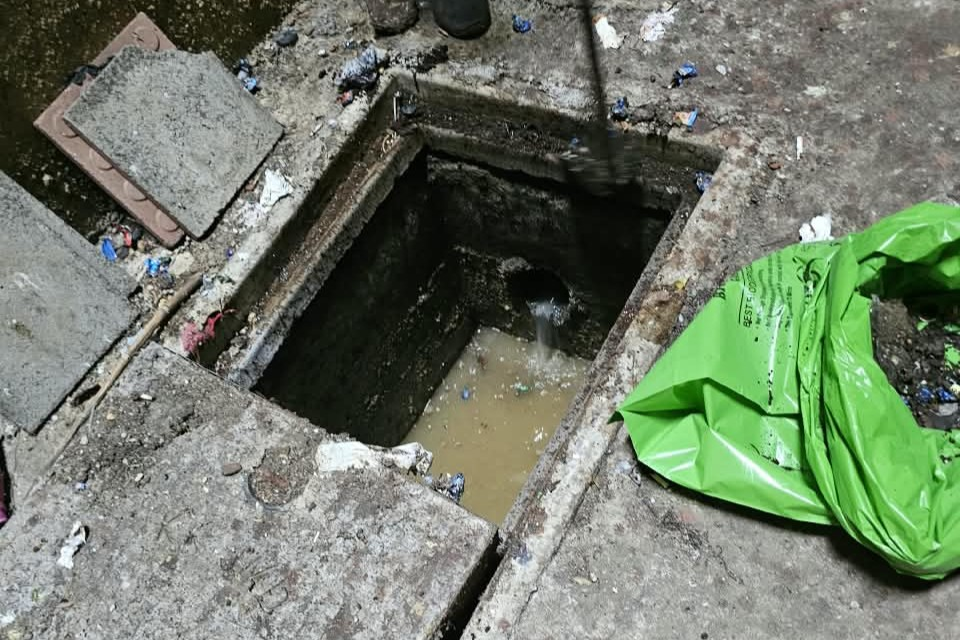
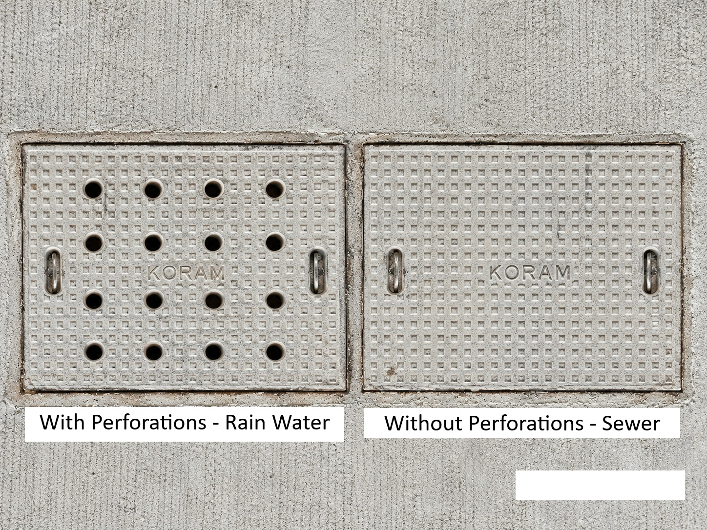

LR R3 Sewer Drainage Cleaning Underway: Residents Urged to Keep Drains Clear
The routine sewer drainage cleaning work for the entire LR R3 area is being carried out today as part of the community’s regular maintenance schedule. This cleaning exercise is conducted once every six months to ensure that the drainage system remains clean and functions efficiently.
If the cleaning work cannot be completed today, it will continue tomorrow. At the time of writing this article, most of the sewer lines had already been cleaned.
What Gets Collected in Our Sewer Drains?
Many residents may not realise what eventually finds its way into the sewer drainage system. Anything that enters the shower outlet, toilet or dry balcony drainage can reach the sewer lines.
Some of the commonly found materials include:
- Hair from bathrooms and shower outlets.
- Soil and dirt washed away during cleaning.
- Plastic and other waste materials.
- Other non-biodegradable items.
These materials can accumulate over time, cause blockages and make regular maintenance necessary.
The wastewater collected through the sewer system is eventually sent to the Sewage Treatment Plant (STP), where it undergoes treatment. The treated water is then reused for purposes such as toilet flushing, helping conserve fresh water.

Understanding the Two Types of Drainage Systems
It is important to understand that our community has two separate drainage systems:
1. Sewer Drainage System
This system collects wastewater from toilets, bathrooms, showers, kitchens and other household drainage outlets. The wastewater is directed to the STP for treatment.
2. Rainwater Drainage System
This system collects rainwater from terraces and balconies. The collected water is directed towards the rainwater harvesting system, where it can contribute to groundwater recharge.

What Can Residents Do?
Keeping the drainage system clean is not just the responsibility of the maintenance team. Every resident can contribute through a few simple habits:
- Dispose of hair properly: Avoid washing hair into shower drains. Collect it and throw it in a dustbin.
- Do not flush unwanted materials: Avoid disposing of plastic, sanitary waste and other non-flushable materials through toilets.
- Keep dry balcony drains clear: Do not allow soil, plastic or household waste to enter the drainage outlets.
- Avoid using soap and chemicals on balconies: Do not wash balconies with soap or cleaning chemicals, as balcony water enters the rainwater drainage system, which is connected to rainwater harvesting.
- Use dustbins: Dispose of solid waste responsibly instead of allowing it to enter any drainage outlet.
A Shared Responsibility
Regular sewer cleaning helps maintain hygiene, prevent blockages and ensure the smooth functioning of the community's wastewater management system. However, preventive action by residents is equally important.
A little care at the household level can reduce blockages, minimise maintenance efforts and help protect our rainwater harvesting system.
Clean drains begin with responsible habits. Let us all do our part to keep LR R3 clean and sustainable.